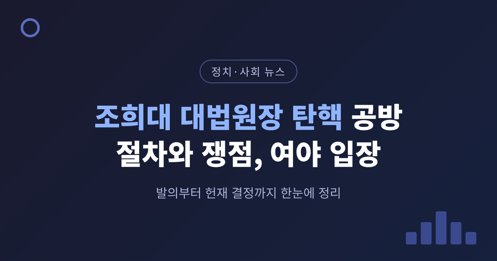
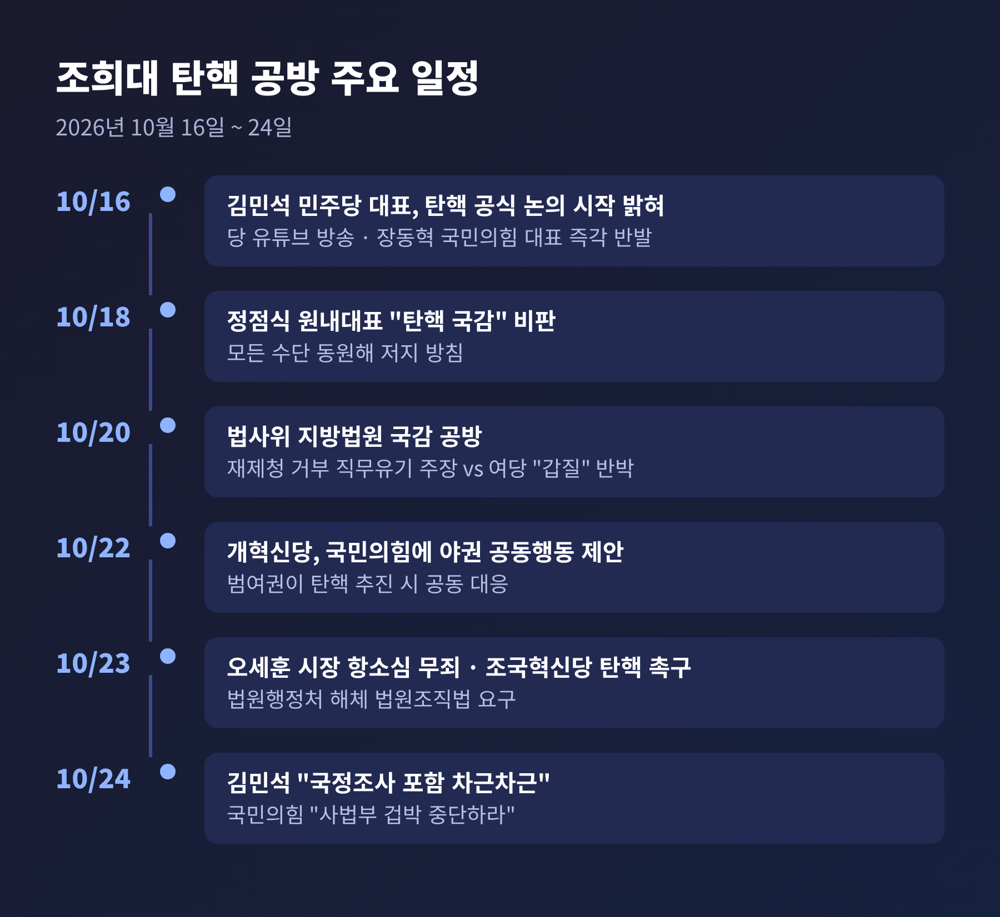
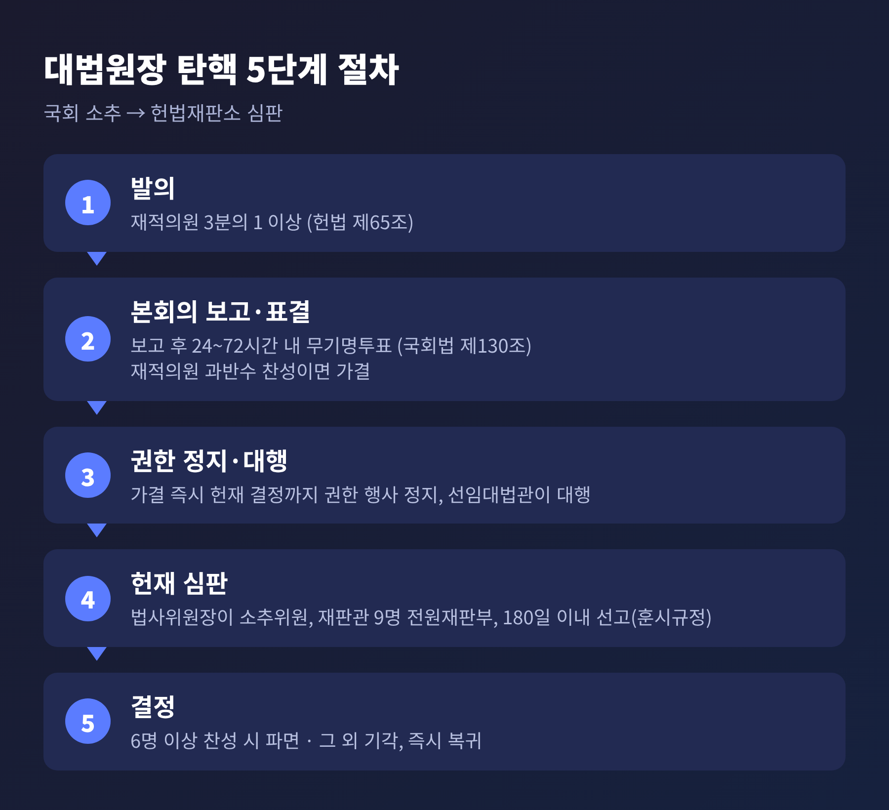
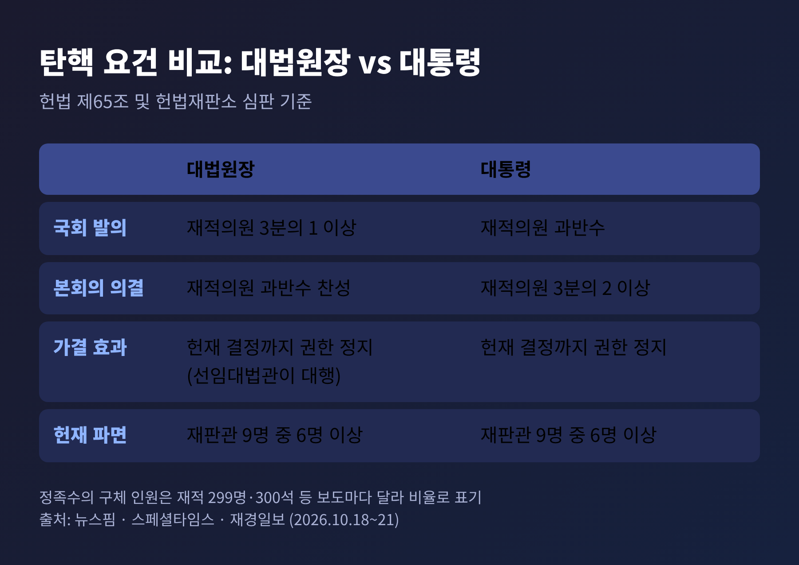
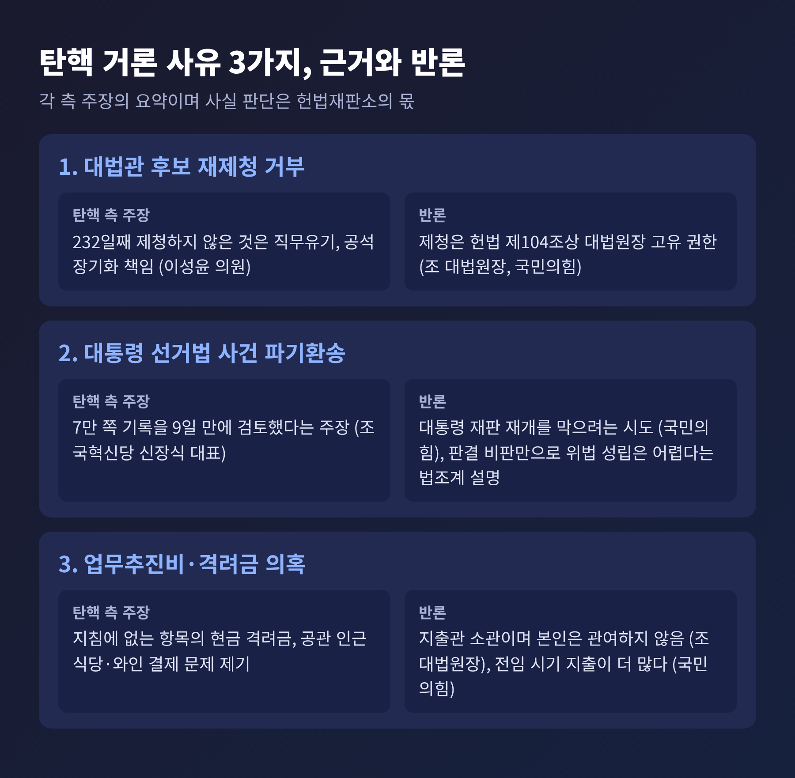
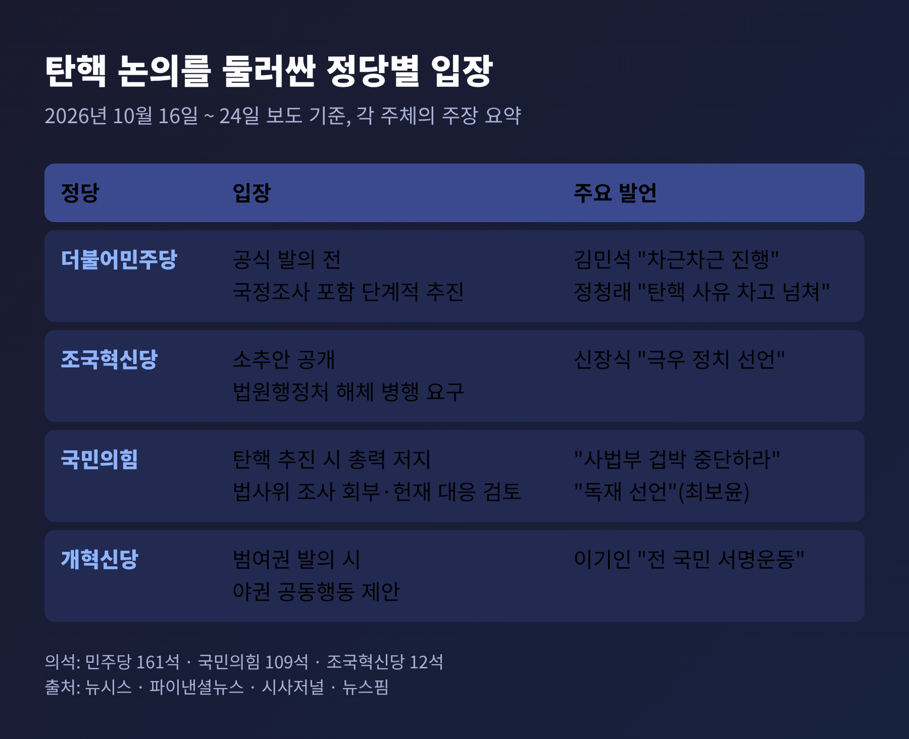

이번 글에서는 국정감사 후반전의 최대 쟁점으로 떠오른 조희대 대법원장 탄핵 공방을 정리해 보겠습니다.
핵심만 먼저 말씀드리면, 더불어민주당은 아직 탄핵소추안을 공식 발의하지 않았습니다. 국정조사를 포함해 단계적으로 가겠다는 입장입니다. 국민의힘은 사법부 압박이라며 총력 저지를 예고했습니다.
탄핵의 요건과 절차, 쟁점별 근거와 반론, 사법 독립 논란과 앞으로의 전망을 순서대로 살펴보겠습니다.
공방의 출발점은 10월 16일입니다. 김민석 민주당 대표가 당 유튜브 방송에서 "모든 방법과 어떤 경로를 올려놓고 논의하기 시작했다"고 밝혔습니다(뉴시스, 10월 19일). 그 이틀 전인 14일까지는 자진 사퇴를 압박하는 수준이었으니, 한 단계 나아간 셈입니다(아이뉴스24, 10월 18일).
이후 일정은 아래와 같습니다.

10월 18일에는 정점식 국민의힘 원내대표가 "탄핵 국감을 만들고 있다"며 추진 여부를 빨리 결정하라고 촉구했습니다(매일일보). 20일 법사위 지방법원 국감에서는 이성윤 민주당 의원이 대법관 후보를 232일째 제청하지 않는 것은 직무유기라고 주장했습니다. 같은 자리에서 국민의힘 김태규 의원은 여당이 법원에 "갑질"을 하고 있다고 맞받았습니다(세계일보, 10월 20일).
22일에는 개혁신당이 국민의힘에 야권 공동행동을 제안했습니다. 범여권이 탄핵을 추진하면 함께 막자는 내용입니다(연합뉴스 원문, 파이낸셜뉴스 10월 22일).
23일에는 오세훈 서울시장이 명태균 여론조사 대납 의혹 사건 항소심에서 무죄를 선고받았습니다. 조국혁신당은 곧바로 긴급 기자회견을 열어 탄핵과 법원행정처 해체를 요구했습니다(서울신문, 10월 23일). 김 대표는 24일 "국정조사를 포함해 원래 생각한 대로 차근차근 진행해 나갈 것"이라고 말했습니다(시사저널, 10월 24일).
대법원장은 사법부의 최고 책임자입니다. 대법관 제청권과 법원행정을 총괄합니다. 그런 자리를 두고 집권 여당이 탄핵을 공식 논의한다는 사실 자체가 무게를 가집니다.
더 눈여겨볼 대목은 의석 구조입니다. 민주당은 161석, 국민의힘은 109석입니다(뉴시스). 민주당이 당론으로 결정하면 단독으로도 발의와 의결 정족수를 채울 수 있다는 분석이 나옵니다(뉴스핌, 10월 21일). 예전엔 '발의 모임'이 만들어져도 실제 발의로 이어지지 않았습니다. 올해 3월에도 범여권 의원 모임이 소추안을 작성했으나 멈췄습니다(뉴시스). 지금은 여당 대표가 직접 논의를 공식화했다는 점이 다릅니다.
다만 의석이 곧 결과를 뜻하지는 않습니다. 표결은 무기명입니다. 당 내부에서도 역풍을 우려하는 목소리가 있어, 실제 발의 여부는 불투명합니다(뉴시스). 뉴시스는 당정 지지율 침체 속 지지층 결집용 행보라는 해석도 전했습니다만, 어디까지나 해석입니다.
헌법 제65조에 따라 대법원장 탄핵소추는 재적의원 3분의 1 이상이 발의하고, 재적의원 과반수가 찬성하면 의결됩니다. 대통령 탄핵이 발의 과반수, 의결 3분의 2인 것과 비교하면 문턱이 낮습니다(재경일보, 스페셜타임스, 10월 18일).

절차를 풀어 보면 이렇습니다.
첫째, 발의입니다. 둘째, 본회의 보고와 표결입니다. 국회법 제130조에 따라 조사 회부를 의결하지 않으면 보고 후 24시간 이후 72시간 이내에 무기명투표를 해야 합니다(뉴스핌, 아이뉴스24). 셋째, 가결되면 헌법재판소 결정까지 대법원장의 권한 행사가 정지되고 선임대법관이 권한을 대행합니다. 넷째, 법사위원장이 소추위원이 되어 헌재에 소추의결서를 냅니다. 다섯째, 재판관 9명 가운데 6명 이상이 찬성하면 파면됩니다. 기각되면 곧바로 복귀합니다.
헌재는 접수일로부터 180일 이내에 선고하도록 되어 있습니다. 다만 이 조항은 훈시규정으로 해석되어 심리가 길어질 수 있다고 합니다(스페셜타임스, 뉴스핌).

한 가지 짚어 둘 점이 있습니다. 정족수의 구체적 인원은 보도마다 다릅니다. 재적의원을 299명으로 본 기사도, 300석으로 본 기사도 있습니다. 이 글에서는 비율로만 적었습니다.
민주당과 범여권이 거론하는 사유는 크게 세 가지입니다. 쟁점마다 반론이 함께 있어, 나란히 놓고 보시는 편이 좋겠습니다.

첫째, 대법관 후보 재제청 거부입니다. 대통령 쪽이 대법원장이 제청한 후보에 재제청을 요구했고, 조 대법원장은 응하지 않았습니다. 조 대법원장은 10월 6일 법사위 국감에서 제청은 헌법 제104조상 대법원장의 고유 권한이며, 증언을 강요하는 것은 "권력분립과 사법 독립의 원칙을 훼손할 염려"가 있다고 밝혔습니다(쿠키뉴스). 국민의힘은 제청권이 헌법상 권한이라고 봅니다. 민주당은 공석이 길어진 데 대한 책임을 묻습니다(국제뉴스, 10월 21일).
법조계 시각도 엇갈립니다. 한쪽에서는 재제청 거부에서 위헌·위법을 찾기 어렵다고 봅니다. 다른 쪽에서는 제청 의무를 다하지 않아 국민의 신속한 재판받을 권리를 침해했다면 위법성이 인정될 여지가 있다고 봅니다(재경일보, 데일리안).
둘째, 이재명 대통령 공직선거법 사건의 파기환송입니다. 조국혁신당 신장식 대표는 7만 쪽 기록을 9일 만에 검토했다고 주장합니다(서울신문). 국민의힘은 대통령 재판의 재개를 막으려는 시도로 봅니다(뉴시스). 법조계에서는 판결에 대한 정치적 비판만으로 법 위반이 성립하기는 어렵다는 설명이 나옵니다(데일리안).
셋째, 업무추진비와 격려금 의혹입니다. 서영교 법사위원장은 지침에 없는 항목으로 매달 현금 격려금이 지급됐다고 문제 삼았습니다. 이성윤 의원은 공관 인근 식당 식사와 와인 구입을 짚었습니다. 조 대법원장은 지출은 별도 지출관 소관이며 자신은 관여하지 않았다고 해명했습니다(쿠키뉴스). 국민의힘은 전임 대법원장 시기 지출이 더 많았다며 탄핵 사유가 되기 어렵다는 입장입니다(아이뉴스24). 전문가들은 실제 허위 기재 여부, 대법원장의 관여, 위반의 중대성을 각각 입증해야 한다고 말합니다(데일리안).
민주당 안에서도 결이 다릅니다. 정청래 의원은 "탄핵 사유는 차고 넘친다"며 국정조사를 시간 끌기로 보는 취지의 글을 올렸습니다(뉴시스, 10월 21일). 박균택·김기표 법사위원은 탄핵하지 않으면 헌법 수호 의지를 의심받을 것이라는 취지로 말했습니다. 반면 김 대표는 국정조사를 포함한 단계적 추진을 말했습니다.
국민의힘은 일관되게 반대합니다. 최보윤 수석대변인은 탄핵 추진을 사법부를 굴복시키려는 "독재 선언"이라고 했고(파이낸셜뉴스, 10월 22일), 24일에는 "도를 넘은 사법부 겁박을 중단하라"고 밝혔습니다. 장동혁 대표는 특검에 오세훈 시장 상고를 포기하라고 촉구했습니다(뉴시스, 10월 24일). 전략도 거론됩니다. 법사위 조사 회부로 1차 방어선을 만들고, 가결되면 헌재에 효력정지 가처분과 권한쟁의심판을 청구하는 방안을 검토 중이라고 합니다(아이뉴스24).

사법 독립을 두고는 서로 다른 말을 합니다. 오세훈 시장은 "선출 권력이 사법부 위에 있는 듯 착각"하는 발언을 비판했습니다(뉴시스). 민주당은 사법부의 책임성 문제라고 맞섭니다. 국민의힘 측은 탄핵론의 배경에 내년 2월 법관 정기인사가 있다는 의혹도 제기했는데, 검증된 사실은 아닙니다(국제뉴스).
전망은 세 갈래로 나눠 볼 수 있습니다.
하나, 발의 여부입니다. 의석상 가능하지만 당내 신중론과 역풍 우려가 변수입니다. 국정조사 일정은 원내에서 조율 중이며 아직 공개되지 않았습니다(시사저널).
둘, 헌재의 문턱입니다. 헌재는 법 위반 여부와 함께 파면을 정당화할 만큼 중대한지를 봅니다. 2004년 노무현 대통령 사건에서는 위반을 인정하고도 기각했고, 2017년과 2025년에는 중대한 위반을 인정해 파면했습니다(재경일보). 전문가 중에는 현재 거론된 사유만으로는 인용을 예상하기 어렵다고 보는 이도, 재제청 거부를 중대한 위반으로 볼 소지가 있다고 보는 이도 있습니다.
셋, 시간입니다. 조 대법원장의 정년은 2027년 6월 5일입니다(스페셜타임스). 뉴스핌은 보도일 기준 약 230일이 남았다고 계산하며, 절차를 마칠 수 있을지 의문을 제기했습니다. 가결 시 권한대행이 대법관 후보를 제청할 수 있는지도 법률에 명확한 규정이 없다는 지적이 있습니다.
정리하면 이렇습니다.
탄핵은 국회의 권한이고, 파면 여부는 헌법재판소의 판단 영역입니다. 지금은 소추안 발의라는 첫 문턱 앞에 있습니다.
"정치가 사법을 향해 던지는 질문과, 사법이 헌법으로 답하는 일은 서로 다른 무대에 있다." 이 구분을 놓치지 않는 것이 이번 공방을 읽는 출발점이 아닐까 합니다.
앞으로 민주당의 발의 결정과 국정조사 일정, 오세훈 사건의 상고 여부를 차례로 지켜보시길 권합니다. 양측의 주장이 모두 공개된 자료로 확인되는 만큼, 어느 한쪽의 해석에 기대기보다 근거를 직접 비교해 보시면 좋겠습니다.
※ 이 글은 2026년 10월 24일까지 보도된 내용을 바탕으로 했으며, 각 주장은 해당 주체의 입장입니다.